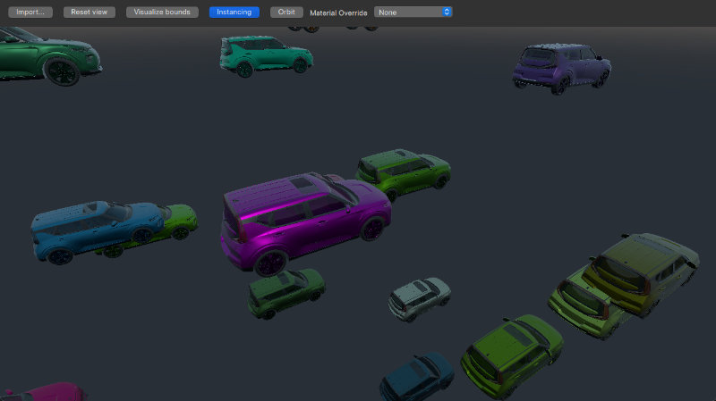
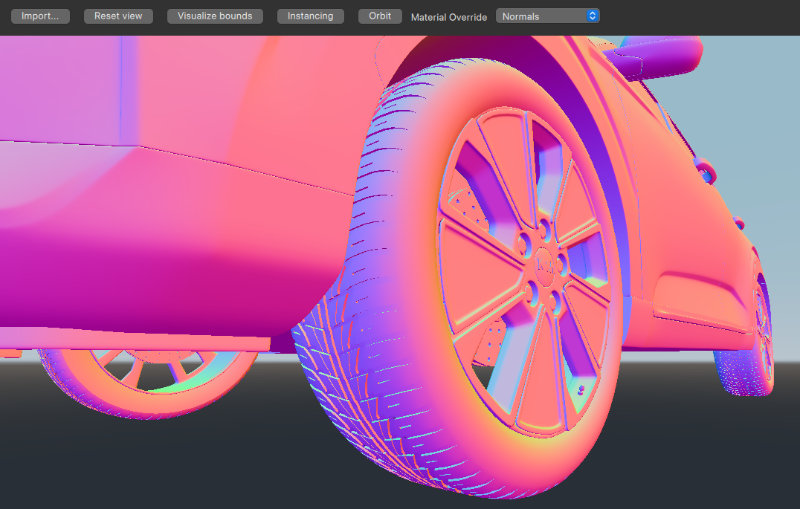

Qt Quick 3D - RuntimeLoader Example
Demonstrates how assets can be loaded at runtime.

This example shows how to implement a simple asset viewer using the RuntimeLoader.
See the introductory example documentation for an explanation of how to set up a basic scene. Once we have the scene set up we can add the RuntimeLoader item:
RuntimeLoader { id: importNode source: windowRoot.importUrl instancing: instancingButton.checked ? instancing : null onBoundsChanged: helper.updateBounds(bounds) }
Loading an asset is done by setting the RuntimeLoader's source property. In this example the source is bound to the importUrl which will be changed when the user selects a file in the file-dialog.
Assuming the asset can be loaded, the content will be created as children of the RuntimeLoader importNode. Note that the RuntimeLoader is a Node type, and since it is also the root node for the loaded asset, any transforms applied to the importNode will also affect its children.
Error handling
If an asset fails to load then the RuntimeLoader's status property will be set to Error. The RuntimeLoader's errorString can then be queried to get a more detailed description of the error.
In this example we will be displaying the error message in a red message box in the middle of the screen, like this:
Rectangle { id: messageBox visible: importNode.status !== RuntimeLoader.Success color: "red" width: parent.width * 0.8 height: parent.height * 0.8 anchors.centerIn: parent radius: Math.min(width, height) / 10 opacity: 0.6 Text { anchors.fill: parent font.pixelSize: 36 text: "Status: " + importNode.errorString + "\nPress \"Import...\" to import a model" color: "white" wrapMode: Text.Wrap horizontalAlignment: Text.AlignHCenter verticalAlignment: Text.AlignVCenter } }
Moving the camera
To make it possible to change the position of the camera we use the WasdController from the Helpers module and bind it to our camera, like this:
OrbitCameraController { id: orbitController origin: orbitCameraNode camera: orbitCamera enabled: helper.orbitControllerEnabled } WasdController { id: wasdController controlledObject: wasdCamera enabled: !helper.orbitControllerEnabled }
In addition to the WasdController, the example uses a WheelHandler and a PointerHandler to scale and rotate the model.
Instancing
The RuntimeLoader item can also be used in combination with instancing, as shown here:
RandomInstancing { id: instancing instanceCount: 30 position: InstanceRange { property alias boundsDiameter: helper.boundsDiameter from: Qt.vector3d(-3*boundsDiameter, -3*boundsDiameter, -3*boundsDiameter); to: Qt.vector3d(3*boundsDiameter, 3*boundsDiameter, 3*boundsDiameter) } color: InstanceRange { from: "black"; to: "white" } }
RuntimeLoader does not inherit from Model, but it has its own instancing property which allows us to instance a complex imported asset as if it were a simple model. In this case we use the RandomInstancing component from the Helpers module to randomly position items within a fixed area and with a random color.
Material Overrides
Sometimes when loading an asset, it is possible that it may not look as expected. The materialOverride property will change how each material in the scene is rendered to display a particular contribution to the overall rendering. This can be useful for determining what exactly about the asset is not correct so that the original asset can be adjusted if necessary.

Files: